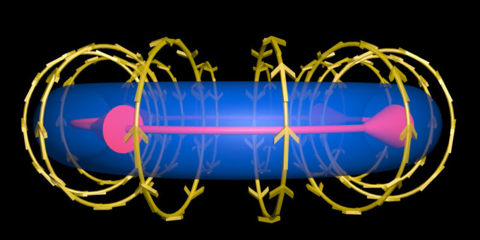
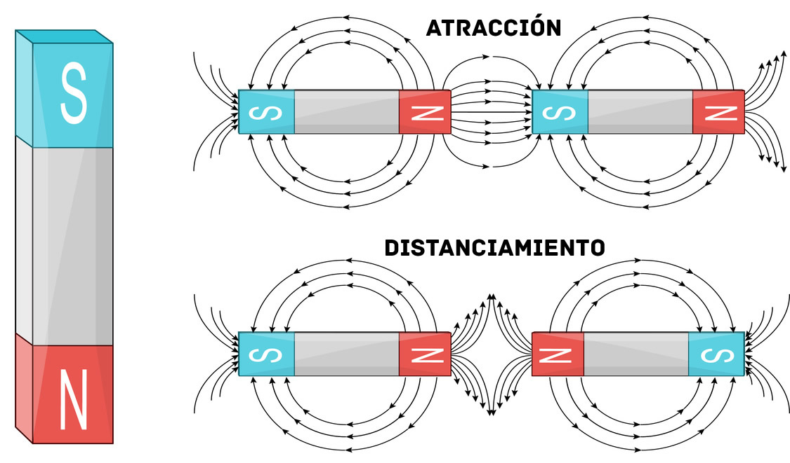
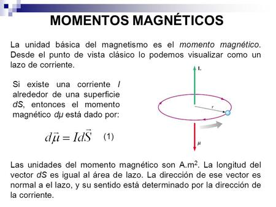
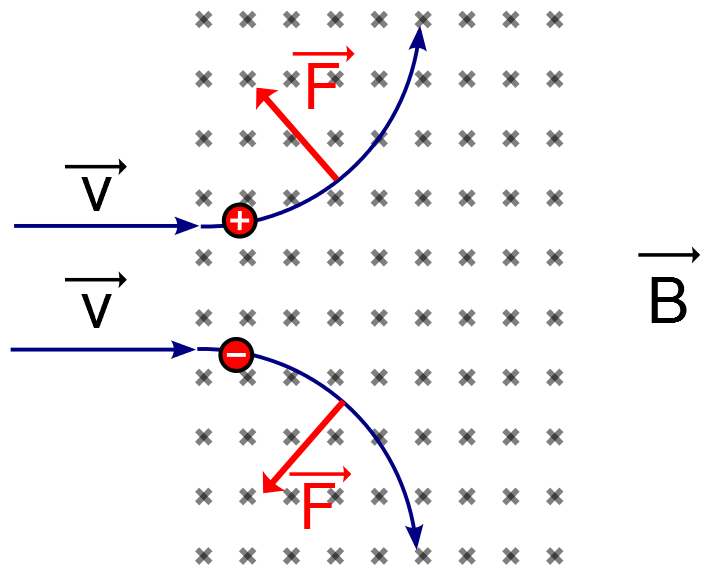
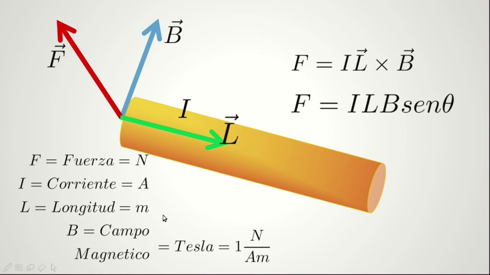
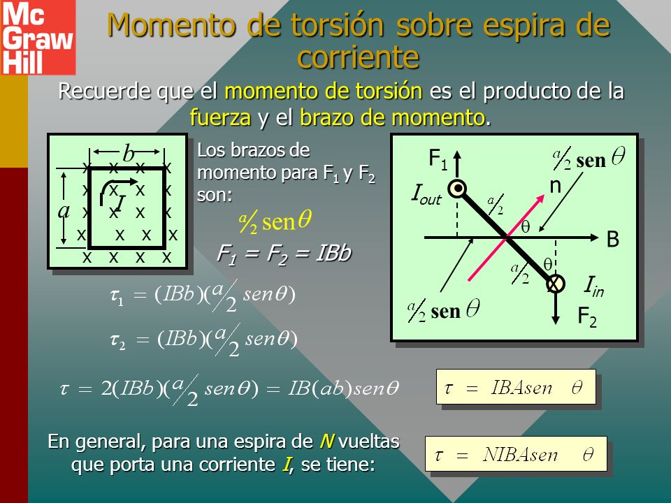
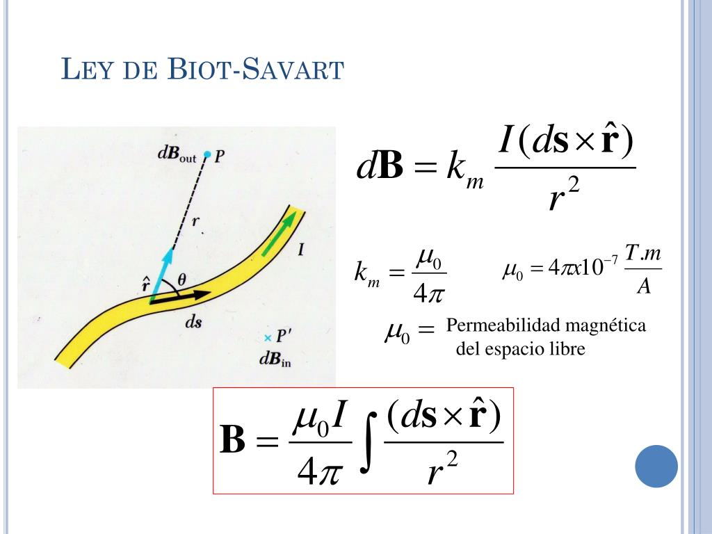
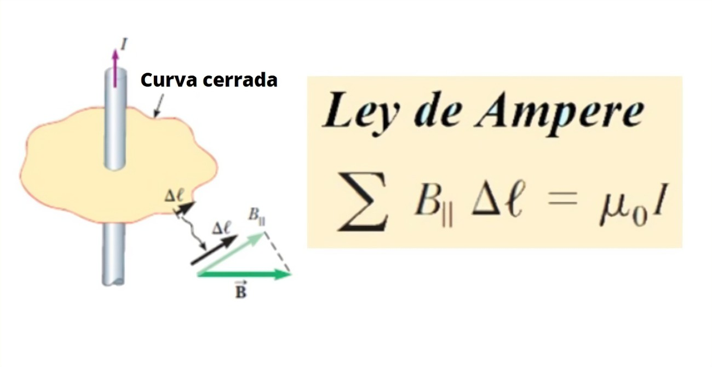
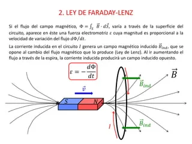

El electromagnetismo es la rama de la física que estudia las relaciones entre los fenómenos eléctricos y magnéticos, es decir, las interacciones entre las partículas cargadas y los campos eléctricos y magnéticos.
En 1821 los fundamentos del electromagnetismo fueron dados a conocer con el trabajo científico del británico Michael Faraday, lo que dio origen a esta disciplina. En 1865 el escocés James Clerk Maxwell formuló las cuatro “ecuaciones de Maxwell” que describen por completo los fenómenos electromagnéticos.

Visualización en 3D de una espira generando un campo magnético.
Campo Magnético
El campo magnético B es una región del espacio donde una carga en movimiento o un material magnético experimentan una fuerza. Se mide en teslas (T) y es generado por corrientes eléctricas o por materiales ferromagnéticos.
Representa líneas cerradas que rodean a corrientes, en contraste con el campo eléctrico. Su análisis es fundamental para comprender la inducción electromagnética y el magnetismo en materiales.

Líneas de campo magnético en un imán.
Momento Magnético
El momento magnético de una espira de corriente depende de la corriente I y del área A encerrada:
𝝁 = I·A·𝒏̂
Es un vector perpendicular al plano de la espira. Este concepto es fundamental para entender el funcionamiento de brújulas, materiales ferromagnéticos y dispositivos como motores de corriente continua.

Diagrama del vector de momento magnético.
Fuerza Magnética
La fuerza magnética sobre una carga en movimiento es una de las manifestaciones fundamentales del electromagnetismo. Está dada por:
𝐹 = q(𝐯 × 𝐁)
Como se indica en la ley de Lorentz, esta fuerza es perpendicular tanto al campo B como a la velocidad v. (Halliday y Resnick, Capítulo 28)
Características y análisis del vector de fuerza magnética.
Fuerzas magnéticas sobre cargas en movimiento
Una carga q en movimiento dentro de un campo magnético B experimenta una fuerza dada por la ley de Lorentz:
𝐹 = q(𝐯 × 𝐁)
Esta fuerza es perpendicular tanto a la velocidad de la carga como al campo magnético, y su dirección se determina usando la regla de la mano derecha.

Cargas eléctricas dentro de un campo magnético.
Movimiento de partículas cargadas en campos magnéticos uniformes
Una partícula con carga q y velocidad perpendicular a un campo B describe un movimiento circular uniforme con radio:
r = mv / (qB)
La frecuencia de giro se denomina frecuencia ciclotrón. Este principio es la base de dispositivos como los ciclotrones y espectrómetros de masas.
Fuerza magnética sobre un conductor con corriente
Un conductor recto de longitud L que conduce una corriente I dentro de un campo magnético experimenta una fuerza dada por:
𝐹 = I(𝐿 × 𝐁)
Esto explica el principio de funcionamiento de motores eléctricos y altavoces. (Sears y Zemansky, Cap. 29)

Ilustración de la dirección de la corriente eléctrica en un alambre conductor.
Momento de torsión sobre un lazo de corriente
Un lazo de corriente en un campo magnético experimenta un momento de torsión (torque) dado por:
τ = 𝐦 × 𝐁
donde 𝐦 es el momento magnético del lazo. Este fenómeno es clave en galvanómetros y brújulas. (Halliday, Cap. 29)

Explicación del momento de torsión.
Ley de Biot-Savart
Permite calcular el campo magnético generado por un segmento de corriente. Su expresión es:
d𝐁 = (μ₀/4π) · (I d𝐥 × 𝐫̂) / r²
Donde r̂ es el vector unitario desde el elemento de corriente hacia el punto de observación. Se utiliza, por ejemplo, para hallar el campo en un lazo circular. (Sears y Zemansky, Cap. 30)

Ley de Biot-Savart aplicada a un alambre conductor irregular.
Ley de Ampère
Relaciona el campo magnético en una trayectoria cerrada con la corriente encerrada:
∮𝐁·d𝐥 = μ₀·Ienc
Es útil en distribuciones con simetría cilíndrica, como cables largos o solenoides. (Halliday, Cap. 30)

Ley de Ampere aplicada a un alambre conductor irregular.
Ley de Faraday
La ley de Faraday establece que un cambio en el flujo magnético a través de un circuito induce una fuerza electromotriz (fem):
𝜀 = - dΦB / dt
Esta es la base de funcionamiento de generadores, transformadores y motores eléctricos.

Ley de Faraday-Lenz aplicada a un imán de barra.
Ley de Lenz
Complementa la ley de Faraday estableciendo que la dirección de la corriente inducida se opone a la variación del flujo magnético que la produce:
𝜀 = - dΦB / dt (el signo negativo representa la oposición de la corriente inducida)
Esto asegura la conservación de la energía y se manifiesta en efectos como el frenado electromagnético. (Sears y Zemansky, Cap. 31)
Aplicaciones tecnológicas
Transformadores: Para aumentar o disminuir voltaje en redes eléctricas.
Motores Eléctricos: Convierten energía eléctrica en energía mecánica.
IRM (Imagen por Resonancia Magnética): Usa campos magnéticos intensos para visualizar tejidos blandos.